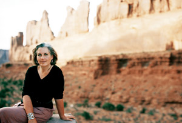
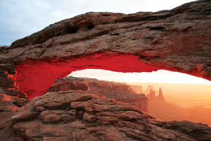

On a wet and windy morning filled with the smells of rain-soaked earth and eucalyptus, a small group of students, staff and faculty assembles outside Conference Hall 1 at California State University Channel Islands in Camarillo, Calif. Nursing steaming cups of coffee, they chat about the woman they’ve come to meet - Terry Tempest Williams.
Williams is the author of 14 books, many of them collections of essays about nature and community. She’s a storyteller who uses personal experience and her training as a naturalist to explore how individual and collective health are tied to the health of the land.
“We’re animals - mammals,” she’s fond of saying. “Our deepest memories are of Earth. I think we forget, but reconnect with those ancestral memories when we go out into nature. We remember that everything is interrelated. Nothing stands alone.”
The daughter of one of the first Mormon families to settle Utah’s Salt Lake Valley and make a living from the land, Williams honed her storytelling and listening skills in the vast, untrammeled wilderness of the Colorado Plateau. She often writes about the Southwest and is probably best known for her sixth book, Refuge: An Unnatural History of Family and Place. It chronicles the unfolding of two devastating events in Williams’ life - the flooding of her beloved Bear River Migratory Bird Refuge just north of the Great Salt Lake, and the death of her mother from ovarian cancer.
The cancer, which has stricken eight other women in Williams’ family and numerous others in her community, is not hereditary. It is thought to be the result of living downwind from a nuclear test site in Nevada.
Williams’ struggle to come to terms with these losses led her to question everything from her upbringing in the Mormon faith to the policies of the U.S. government. “In Mormon culture, authority is respected,” she says. “Obedience is revered, and independent thinking is not. I was taught as a young girl not to ‘make waves,’ or ‘rock the boat.’”
For years, Williams followed the example set by her mother. She watched, listened and formed opinions, but said nothing. Eventually, as the women of her family began to sicken and die, the silence became intolerable. Now she writes and speaks openly about her family’s experiences with cancer, warning that “... the choices and decisions we make in terms of how we use the land ultimately affect our very DNA. Environmental issues are life issues.”
Today at Cal State, Williams has come to lead a discussion about her book, The Open Space of Democracy. Like much of her writing, it discusses the politics and power of place. When the doors to the large conference hall open, the participants make their way to the front of the room and pull out well-thumbed copies of the book, which is required reading on campus this year. Williams arrives a few minutes later. Moving into the half-circle, she greets people quietly but warmly - a quick hug here, a firm handshake there, her striking, gray-green eyes smiling a welcome.
The doors are closed and introductions begin. This is a diverse group, spanning a wide range of ages, cultures and ethnicities. Among them are Native American, Palestinian, Chinese, Israeli and Puerto Rican participants. Williams is pleased. At the heart of her work - what she is gently but passionately urging groups like this across the country to embrace - is the understanding that diversity, difference and dissent are healthy and to be encouraged. “The open space of democracy provides justice for all living things - plants, animals, rocks and rivers, as well as human beings,” she begins, reading from her book. “It is a landscape that encourages diversity and discourages conformity.”
Williams is well aware that encouraging diversity and dissent can be a messy business; that’s why she lobbies so strongly for meaningful dialog. “There’s nothing more exciting to me than rigorous conversation,” she tells the group. “It doesn’t matter whether an answer is right or wrong, only that ideas be heard and discussed openly. Look at our Founding Fathers and some of the wild debates they had,” she continues. “They dared to disagree passionately with one another, butremained open to what each had to say. Some even changed their minds. That’s healthy!”
For Williams, the keys to rigorous conversation are storytelling and listening. “Stories bypass rhetoric and pierce the heart,” she says. “They offer a wash of images and emotion that returns us to our highest and deepest selves, where we remember what it means to be human, living in place with our neighbors.”
Williams was raised to believe that all life is connected to spirit. From the Bear River Migratory Bird Refuge and her beloved grandmother “Mimi,” she also learned that a place can offer sanctuary, and in the embrace of the Great Salt Lake she floated for hours, “imprinting on Great Basin skies.”
In Williams’ mind, both storytelling and listening are intimately linked to the land. “There are other languages being spoken by the wind, water and wings,” she continues reading. “I want to speak the language of the grasses, rooted yet soft and supple in the presence of wind before a storm. I want to write in the form of migratory geese like an arrow pointing south toward a direction of safety. Listen. Below us. Above us. Inside us.” She pauses, then adds, “If we listen to the land, we will know what to do.”
Seeing the puzzled look on some faces around her she adds, “What I mean is that if we allow ourselves contemplative time in nature - whether it’s gardening, going for a walk with the dog, or being in the heart of the southern Utah wilderness - then we can hear the voice of our conscience. If we listen to that voice, it asks us to be conscious. And if we become conscious we choose to live lives of consequence.”
By way of illustration, Williams offers the story of her uncle, Richard Tempest, who was running for state senate in Utah when Williams and her cousin took part in a protest at the nuclear test site in Nevada. “My uncle’s wife, mother and sister-in-law were all exposed to nuclear fallout from the testing in Nevada,” she says. “They all developed breast cancer and had to have mastectomies. My uncle went down to the test site to see what the protests were about. Later, when he was asked by the Sierra Club to state his stand on environmental issues, he stood up and said, ‘My name is Richard Tempest, and I am a member of the clan of one-breasted women.’”
The intense, appreciative silence in the room is broken by a collective sigh as Williams’ story ends. “That’s the power of story,” she smiles. “Ask yourselves what stories you are carrying that can help illuminate the open space of democracy.”
Williams’ love for spirited conversation draws readers of all ages and persuasions to her books, and the group that has gathered to hear her speak expects to be challenged. Williams shares her involvement with the Castle Valley community and their efforts to protect the lands surrounding their town, and other stories and discussions follow. A young Native American woman tells how she confronted a teacher who was making stereotypical remarks. A Palestinian student relates how he was discriminated against, and challenges the statements of his Israeli counterpart across the room. The group touches on genocide in Rwanda, the push for oil drilling in the Arctic National Wildlife Refuge and the war in Iraq. Throughout, Williams encourages frankness, commending those who disagree or ask uncomfortable questions. “It’s not altogether pleasant, and there’s no guarantee as to the outcome,” she says. “But if we cannot do this, I fear we will be left talking only with like-minded people.”
Not everyone is comfortable with Williams’ open discussion of controversial issues. With the publication of The Open Space of Democracy and start of a nationwide speaking tour, she created an unexpected stir. Shortly after the tour began, her invitation to speak at Florida Gulf Coast University was withdrawn by the school’s president, William Merwin. The reasons cited for the withdrawal were Williams’ refusal to submit her talk for approval and fears that she would be too critical of President Bush. “I refused as a matter of principle,” Williams explains. “It was an issue of free speech under the contract I signed with the university.”
The response of the students and faculty was immediate. They filed a formal letter of protest with President Merwin, and worked together to sponsor another talk by Williams at the college later in the month. Though Williams was grateful and impressed by the students’ insistence on maintaining open dialogue on their campus, she is still deeply disturbed by the experience.
“How can The Open Space of Democracy be perceived as controversial when it’s about life, free speech, beauty, embracing questions and the interconnectivity of life?” she asks. “Why is it controversial to be a conservationist? Why is a writer of natural history, who focuses on landscape and culture, perceived as radical? The ultimate question, of course, is what are we afraid of?”
Williams continues to explore difficult questions and urges others to do the same. Today, as the gathering at Camarillo closes, she makes one last appeal. “Please know your power,” she says, searching the faces around her, making eye contact and acknowledging the eager smiles. “Find something that matters deeply to you and pursue it. Question. Stand. Speak. Act. Make us uncomfortable. Make us think.”
“I believe in facing life directly, to not be afraid of risking oneself for fear of losing too much.” I paused. Here was my mother standing outside the shadow of cancer and my grandmother standing inside the threshold of old age. These were the women who had seen me through birth. These were the women I would see through death.
The three of us stared out at the lake, the color of Chinese porcelain, and were hypnotized by the waves.
“How do you find refuge in change?” I asked quietly.
Mimi put her broad hand on mine. “I don’t know …” she whispered. “You just go with it.”
Refuge: An Unnatural History of Family and Place
The heart is the house of empathy whose door opens when we receive the pain of others. This is where bravery lives, where we find our mettle to give and receive, to love and be loved, to stand in the center of uncertainty with strength, not fear, understanding this is all there is. The heart is the path to wisdom because it dares to be vulnerable in the presence of power. Our power lies in our love of our homelands.
The Open Space of Democracy
Not far an old juniper stood in the clearing, deeply rooted and gnarled. I had never seen such a knowledgeable tree. Perhaps it was the silver sheen or its shredded bark that reminded me of my grandmother, her windblown hair in the desert, her weathered face, the way she held me as a child. I wanted to climb into the arms of this tree.
With both hands on one of its strongest boughs, I pulled myself up and lifted my right leg over the branch so I was straddling it. Leaning back into the body of the juniper, I brought my knees up to my chest and nestled in - hidden, perfectly shaded from the heat. I had forgotten what it felt like to really be held.
Hours pass, who knows how long; the angle of light shifted. Something had passed between us, evident by the change in my own countenance, the slowing of my pulse, and the softness of my eyes as though I was awakening from a desert trance.
I finally inched my way down, wrapping my hands around the trunk. Feet on Earth. I took out my water bottle and saturated the roots. Pink sand turned red. I left the desert in a state of wetness.
Red: Passion and Patience in the Desert
For as far as I can see, the canyon country of southern Utah extends in all directions. No compass can orient me here, only a pledge to love and walk the terrifying distances before me. What I fear and desire most in this world is passion. I fear it because it promises to be spontaneous, out of my control, unnamed, beyond my reasonable self. I desire it because passion has color, like the landscape before me. It is not pale. It is not neutral. It reveals the backside of the heart.
Desert Quartet: An Erotic Landscape
I have felt the pain that arises from a recognition of beauty, pain we hold when we remember what we are connected to and the delicacy of our relations. It is this tenderness born out of connection to place that fuels my writing. Writing becomes an act of compassion toward life, the life we so often refuse to see because if we look too closely or feel too deeply, there may be no end to our suffering. But words empower us, move us beyond our suffering and set us free. This is the sorcery of literature. We are healed by our stories.
An Unspoken Hunger: Stories from the Field
|
 CHERYL HIMMELSTEIN Terry Tempest Williams near her home in Utah. Many of her essays address the power of natural landscapes, especially those of the Southwest. |
ISTOCKPHOTO/MICHAEL CHEN Arches National Park, Utah |
ISTOCKPHOTO/GEIR-OLAV LYNGFJELL Narrows Canyon, Zion National Park, Utah |
|
ISTOCKPHOTO/LUKAS DOUPAL A rock lizard |
ISTOCKPHOTO/BABU RANGASAMY Bryce Canyon; National Park, Utah |
 ISTOCKPHOTO/JEREMY EDWARDS Mesa Arch, Canyonlands National Park, Utah |
|
ISTOCKPHOTO/ANTONIO PRINCIPE Bryce Canyon, National Park, Utah |
ISTOCKPHOTO Sandia Mountains, near Albuquerque, New Mexico. |
ISTOCKPHOTO/CHRISTOPHER RUSSELL Monument Valley, Navajo Tribal Park, Arizona. |